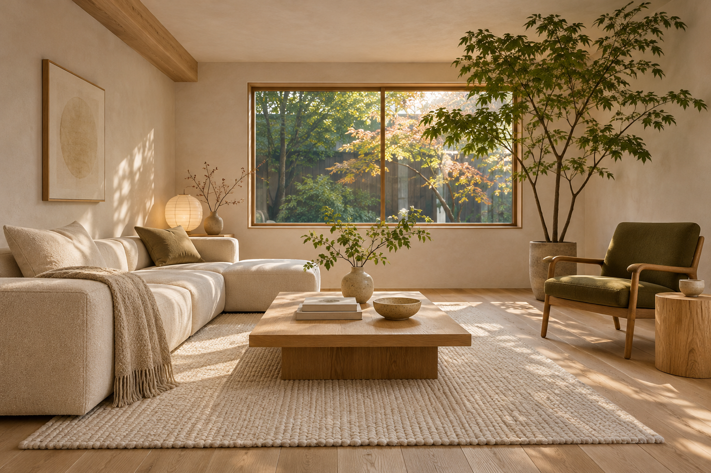

搭建体块，捕捉视角，把空间交给想象。
从搭建到表达，让光影填满你的想象。
本地演示使用预生成示例图，提示词与场景尚未提交至模型。

预生成示例 · 暖木极简 · 自然日光
从当前效果图生成可旋转的 3D 高斯场景，调整视角后用火山模型降噪。
选择一张渲染图后生成 3DGS。
用预设镜头路径穿过当前 3DGS 场景，一键黑箱导出经过 AI 关键帧处理的 1080p MP4；无预览。
为这个视角起一个名字。
这里列出 FORM 当前使用的全部模型，以及它们需要的密钥。Key 只保存在本机，不会上传。
正在读取 API 配置…
结构 · 地面尺寸、厚度、材质和颜色；也可以让地面 Agent 用文字生成。
内置规则 + 实时场景简报 + 你的描述 + 负面词，实际发送给 Seedream 的内容。